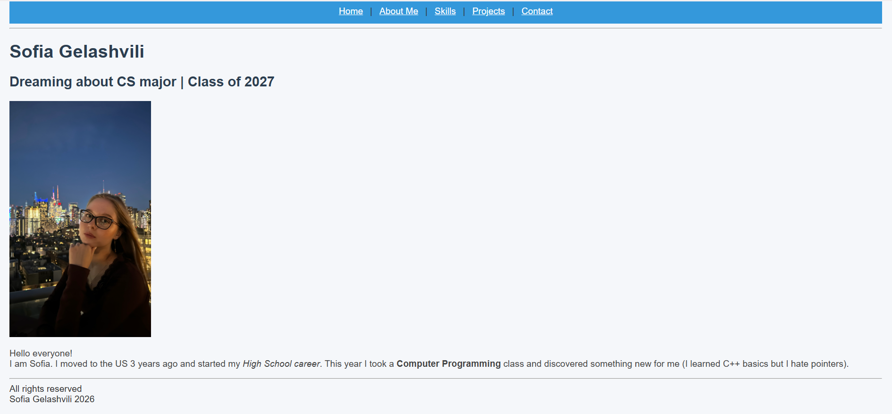

Here are some of the projects I have worked on or plan to build as I grow as a CS student.
Personal Portfolio Website
This multi-page website is my final project for Intro to Web Design.
I built it using only HTML and CSS to practice structure, tables, forms, and styling.
I learned how to organize content across pages and make a clean navigation system.
Created five linked HTML pages
Styled everything with one external CSS file
Used tables, lists, forms, and semantic tags

C++ Password Evaluator
In my Computer Programming class I wrote small programs in C++.
I practiced loops, conditionals, functions, and basic data structures.
Working with pointers was the hardest part for me.
Password analysis
Bonus scoring
Random suggestion
Fishing Charters Website
My friend asked me to create a professional website for his private fishing trips to attract more clients. To make the site look professional, I put my skills to work and used ChatGPT to learn JavaScript and a little bit of CSS.